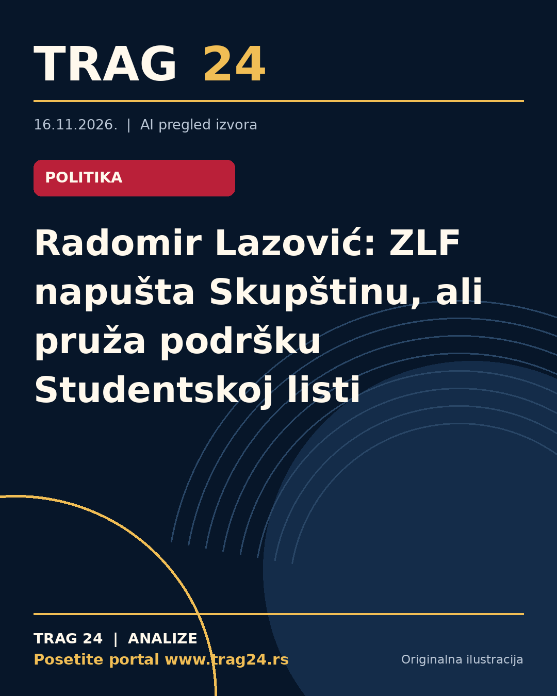

Radomir Lazović: ZLF napušta Skupštinu, ali pruža podršku Studentskoj listi

ŠTA SE DOGODILO
Kopredsednik Zeleno-levog fronta (ZLF) Radomir Lazović održao je svoju oproštajnu konferenciju za novinare u Narodnoj skupštini Srbije, dan pre konstituisanja novog parlamenta. Lazović je najavio da će ZLF ubuduće nastaviti delovanje van parlamenta, ali da je spreman da pruži podršku Studentskoj listi u parlamentarnom radu.
HRONOLOGIJA
Tokom konferencije za novinare, Lazović je sumirao rad ZLF poslanika u prethodnom sazivu skupštine, istakavši njihovu aktivnost kao opozicije. On je takođe naveo da je konstitutivna sednica novog parlamenta zakazana za dan nakon njegovog nastupa. Lazović je izrazio očekivanje da će promenama doprineti i Studentska lista, kojoj je ZLF spreman da pomogne.
ŠTA NAVODE IZVORI
Prema izjavama Radomira Lazovića, poslanici ZLF su u prethodnom sazivu bili jedni od najažurnijih opozicionih glasova u parlamentu, uz aktivno angažovanje i na ulici. On navodi da je kopredsednica ZLF Biljana Đorđević bila pod tajnim nadzorom Bezbednosno-informativne agencije (BIA). Lazović smatra da je neophodno rasformirati BIA i objaviti imena kontakata i saradnika službe iz različitih oblasti, ističući potrebu da svi koji su prekršili zakon budu pozvani na odgovornost.
ŠTA JE POTVRĐENO
Potvrđeno je da je Radomir Lazović zvanično najavio odlazak ZLF iz Narodne skupštine i nastavak rada van parlamenta. Takođe je potvrđeno zalaganje ZLF za podršku Studentskoj listi u budućem radu. Informacije o tome da je Biljana Đorđević bila pod nadzorom BIA navedene su kao tvrdnje izjavljene od strane Lazovića, bez dodatne nezavisne potvrde.
ŠTA NIJE POTVRĐENO
Nije potvrđeno postojanje dokaza ili službenih informacija o nadzoru Biljane Đorđević od strane BIA izvan izjava Lazovića. Takođe nisu dostupni zvanični podaci o nastavku saradnje ili eventualnom obliku podrške koju će ZLF pružati Studentskoj listi u parlamentu.
ŠTA OSTАJE OTVORENO: Ostaje nejasno na koji će tačno način ZLF pružiti podršku Studentskoj listi i da li će njihova saradnja biti formalizovana. Takođe je otvoreno pitanje o ishodu zahteva za rasformiranje BIA i objavljivanje imena njenih saradnika, kao i eventualnim pravnim posledicama za navodne prekršioce zakona u toj službi.
Izvori
- https://www.kurir.rs/vesti/politika/10163485/lazovic-zlf-podrzava-i-spreman-da-pomogne-studentsku-listu-u-parlamentu
- https://nova.rs/vesti/politika/lazovic-zlf-spreman-da-pomogne-studentskoj-listi-u-parlamentarnom-radu/
Ova analiza je pripremljena uz pomoć veštačke inteligencije na osnovu javno dostupnih izvora. Navodi izvora nisu nužno nezavisno potvrđeni.